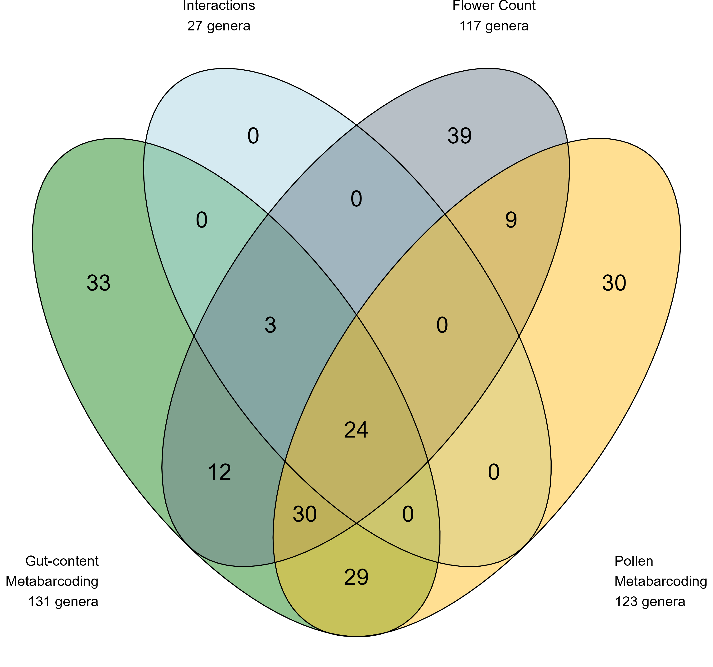
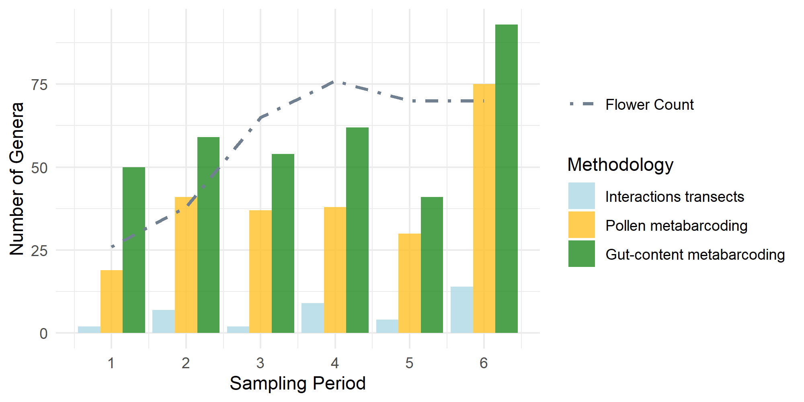
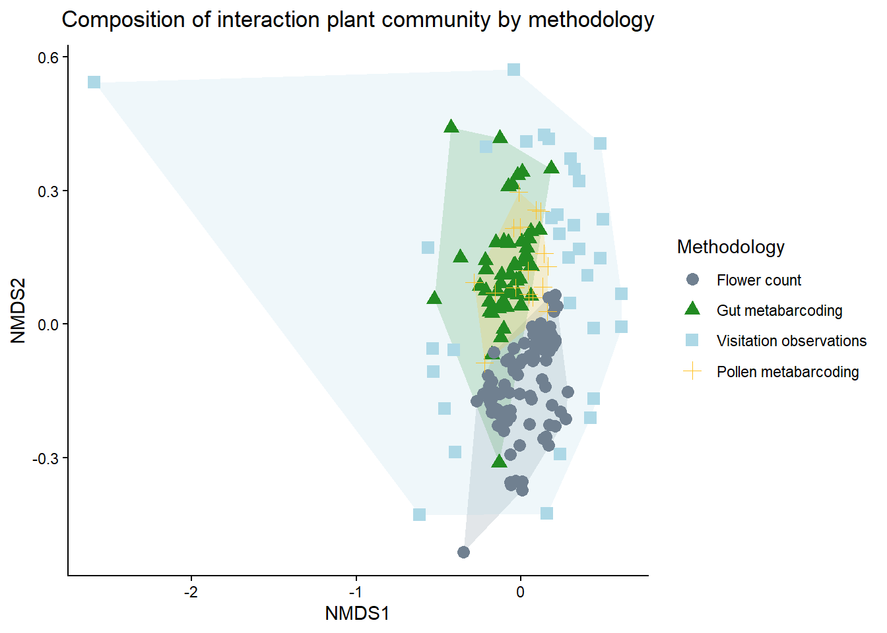
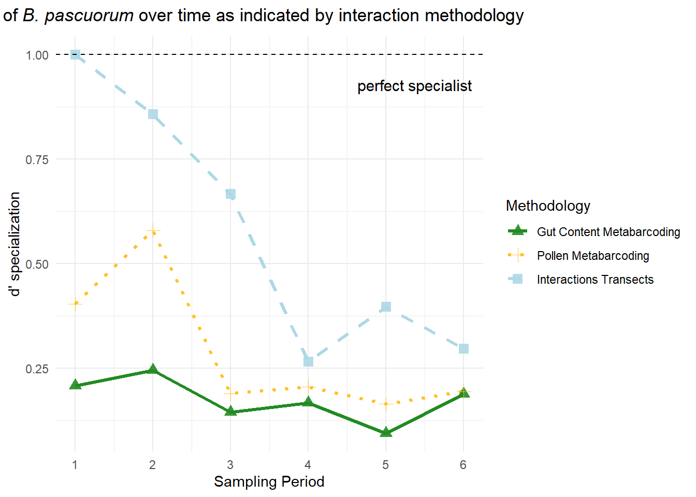
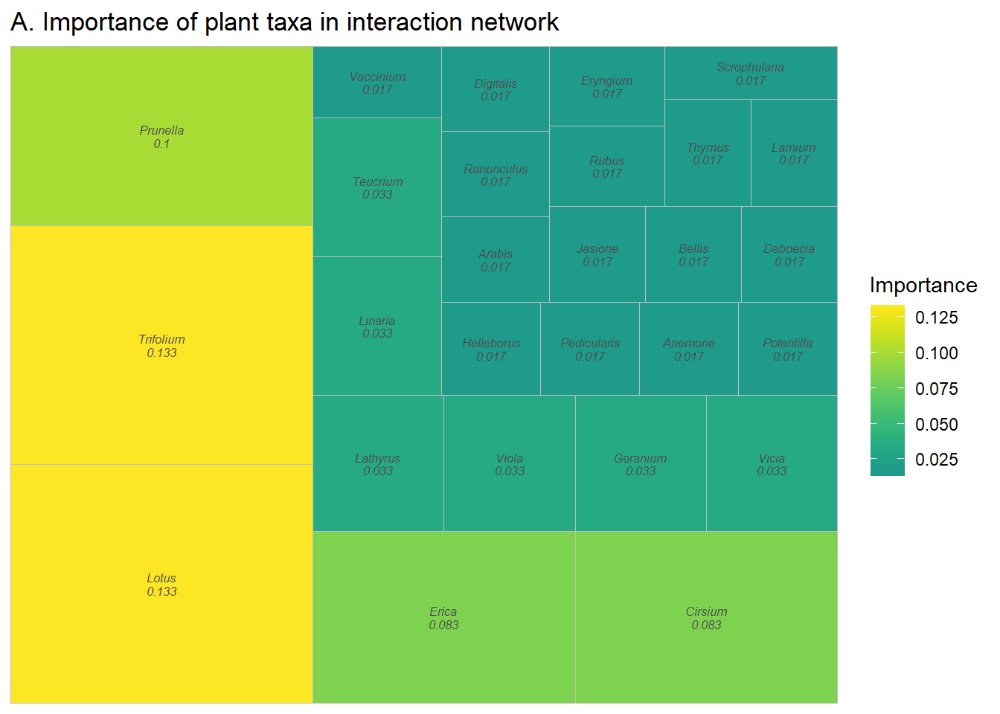
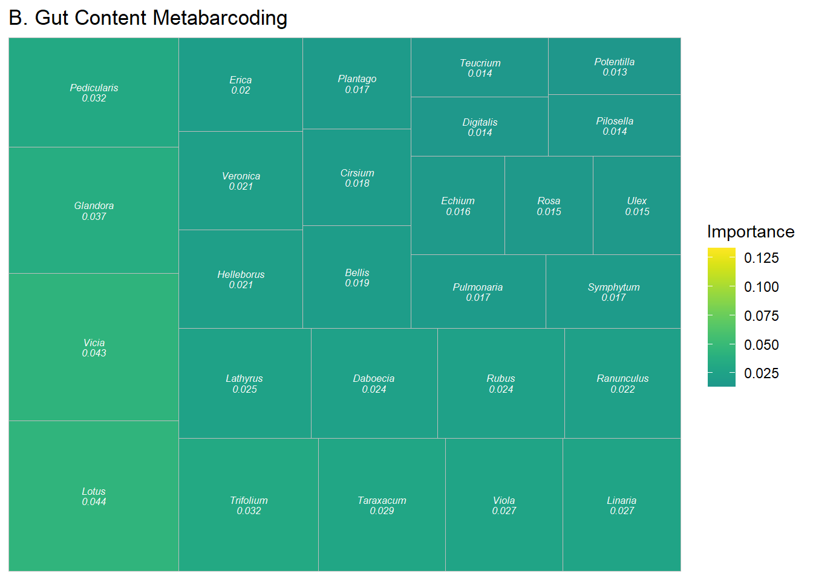
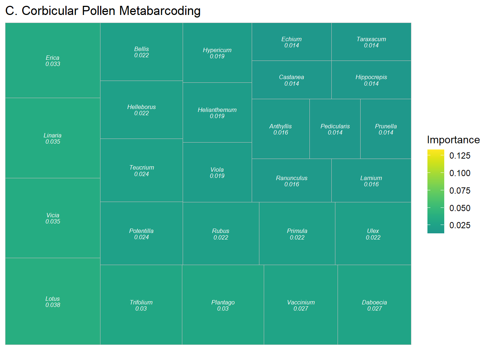
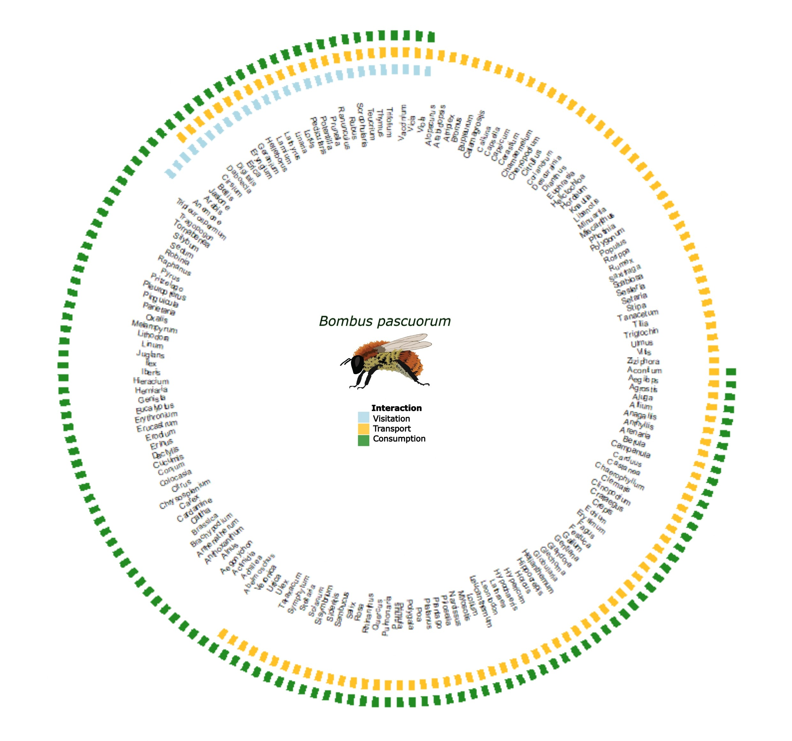

Coupling Diet and Pollen Metabarcoding with Field Surveys to Reveal Plant - pollinator Interactions
Christian Gostout 1, Luis J. Chueca 1, Jon Poza, Xabier Salgado-Irazabal1, Estefanía Tobajas1, Jennifer Rose1, Brais Hermosilla1, Marion Donald2, Manpreet Dhami2, Ainhoa Magrach1,3 1BC3 Basque Centre for Climate Change, Leioa, Spain, 2Bioeconomy Science Institute, Lincoln, New Zealand, 3IKERBASQUE, Basque Foundation for Science, Bilbao, Spain
Key-words: interaction, metabarcoding, network, pollinator
Abstract
Our understanding of plant-pollinator interaction networks hinges on the methods used to describe their nodes and links. Currently, most networks are built from field observations that may overlook many consumer–resource links. Further, interaction networks lack descriptive links that characterize interaction types and outcomes. Towards a more complete approach for building interaction networks, we compare plant interactions from the wild pollinator species, Bombus pascuorum, observed by three methodologies with different implications for interaction outcomes. We compare floral visitation interactions obtained from field observations to plant consumption interactions revealed by metabarcoding of gut contents and pollen transport interactions detected by corbicular pollen loads. Our approach adds functional context to plant–pollinator network links and reveals new interactions. We show that both metabarcoding approaches increase sampling efficiency and reveal links left unobserved by field observations of visitation, highlighting plant taxa that are not pollinator-dependent, yet constitute important dietary resources. Paired with floral diversity surveys, gut content results also reveal seasonal patterns in the spatial extent and functional diversity included in forage, which other methodologies fail to demonstrate. Metabarcoding data analyzed at the individual specimen level further reveal heterogeneity in plant resource use between pollen transport and consumption. Metabarcoding methodologies capture greater spatial, temporal, and taxonomic ranges, while field observations provide validating datasets with taxonomic precision.Our results show that integrating visitation, transport, and consumption data changes network topology and the roles of plant nodes, offering a more nuanced and complete map of interactions with clearer priorities for management. We advocate for defining links explicitly by their functions and combining methods to account for hidden structure in ecological networks.
Introduction
Pollination is a critical ecosystem service that is currently threatened by different global changes, including habitat loss, intensifying agriculture, pathogens, and invasive species (Klein et al., 2006). Pollinators critically support the reproduction of 94% of wild flowering plants and 75% of crop species (Vanbergen & Insect Pollinators Initiative, 2013), contributing to 35% of global food production (Klein et al., 2006). However, our understanding of this topic is incomplete given that, historically, the methodological approach to studying plant-pollinator interactions has been biased towards the plant side of interactions (Bosch et al., 2009; Evans & Kitson, 2020). As a consequence, the well-established relationship between pollinator diversity and the productivity of plant communities (Artamendi et al., 2025; Katumo et al., 2022; Woodcock et al., 2019) lacks an equally developed mirrored perspective, describing the floral diversity that supports pollinator populations.
Network theory provides a useful framework to summarize patterns of plant–pollinator interaction (Burkle & Alarcón, 2011), but the strong influence of the interaction types that define links on the scope of networks has yet to be accounted for in most studies. Existing methodologies for reconstructing interaction networks tend to emphasize structural patterns, while overlooking the functional outcomes of interactions that are critical for understanding how plant communities support pollinators (Quintero et al., 2022). In eusocial bees, for example, plant interactions may have several outcomes. Bees consume plant material, including pollen, nectar, or even plant tissue (Pashalidou et al., 2020; Vaudo, 2015). They also collect pollen on their corbicula for transport to the nest for feeding drones and larvae (Leach & Drummond, 2018; Vaudo, 2015). Finally, visitation of the reproductive parts of flowers can have various outcomes for both the plant and pollinator, including pollination and pathogen transfer (Lignon et al. 2024). Interaction networks generally represent only one of these outcomes, although each is important to understanding how plant taxa support pollinators.
The importance of different outcomes in plant-pollinator interactions becomes clear when considering the biodiversity necessary to support pollinators across life stages. Because the resources needed for foraging adult pollinator nutrition can be different from those needed at the larval stage, or by other colony members (Leach & Drummond, 2018; Vaudo, 2015), transported pollen may not completely represent the interactions necessary to sustain adult pollinator diets. This is especially true for bumblebees (Bombus spp.), which are able to evaluate pollen resource quality to make discerning forage choices (Leonhardt & Blüthgen, 2012; Timberlake, Vere, et al., 2024). Bumblebees make trial-and-error floral visits in order to find adequate forage (Selva et al., 2024), which may result in pollen transport without consumption. Conversely, consumption, or simply visitation, may occur without resulting in transport (Popic et al., 2012). Accounting for different interaction outcomes, such as visitation, transport, and consumption, is a critical next step in representing the network of plant diversity used by pollinators.
Shifting network studies to incorporate the pollinator perspective and leveraging the contributions of different methodologies can produce a more complete image of interaction networks. Research based on microscopy and molecular analyses of pollen load samples sourced from insect specimens can identify greater plant species diversity within interaction networks compared to studies based solely on field observations of floral visitation (Baksay et al., 2022; Bosch et al., 2009). Additionally, studies adopting a pollinator-centered view have revealed greater detail in forage preference trends, such as how pollinators use forage quality or quantity-based strategies (Selva et al., 2024; Timberlake, Vere, et al., 2024), seasonal changes (Leponiemi et al., 2023), life cycle timing, and metabolic specialization (Vaudo, 2015).
Genetic tools can detect plant-pollinator interactions that may be unobserved in pollen microscopy and traditional field surveys Pornon et al. (2017), and target specific interaction types. Amplicon sequence metabarcoding of pollen samples complements the visitation interactions observed by field studies (Arstingstall et al., 2021; K. L. Bell et al., 2017), increasing species detection by 9 - 144% (Baksay et al., 2022; Milla et al., 2022; Smart et al., 2017) and network sampling completeness up to 30%, while reducing exaggeration of specialization (Arstingstall et al., 2021) and revealing interactions beyond the traditionally surveyed floral community (de Vere et al., 2017; Milla et al., 2022). Advances in the reliability and accessibility of amplicon sequencing have made these approaches more feasible for studying plant-pollinator interactions. Field surveys of visitation can now be effectively complemented by genetic tools (Milla et al., 2022) targeting specific interaction types, enhancing our understanding of interaction diversity.
Most studies applying metabarcoding to pollinator-sourced samples for constructing interaction networks analyze the external pollen loads of bees or pollen stored in nest reserves of honey and beebread (Baksay et al., 2022; Devriese et al., 2024; Leontidou et al., 2021; Leponiemi et al., 2023; Selva et al., 2024), despite limitations of these sampling targets. Pollen in these samples can come from the environment, even including accumulation of windborne material (Negri et al., 2015). To account for this, past studies have ignored detections of wind pollinated taxa Pornon et al. (2017), although this may introduce bias to results, given that many plant taxa have partial identities as wind or insect pollinated taxa (Saunders, 2018) A more fundamental issue with externally carried pollen and nest reserves is present in their restricted ability to represent interaction types. Studies of external pollen carried by eusocial bees, for example, have generally sequenced the DNA of pollen from the corbicula (e.g. Shi et al. (2025)). Corbicular pollen provides an easily obtained sample, containing a mixture of pollen collected for transport to the nest for brood feeding (Leach & Drummond, 2018; Vaudo, 2015), which only directly observes interactions where pollen is transported (Arstingstall et al., 2021). Given the role of this pollen in bees’ life cycles, it is easy to overstep the interpretative capacity of these sample types when characterizing forage networks to describe diet, or successful pollination interactions.
Pollinator intestinal tracts (hereafter: guts) represent an additional source for observing interactions, specifically those related to consumption of pollen and other plant material (Haag et al., 2023; Li et al., 2025; Mayr et al., 2021). Plant DNA detected in gut contents can reveal interactions with consumption as the exclusive outcome, which, aside from flower visits, can include nectar robbing (Popic et al., 2012) and plant damage (Pashalidou et al., 2020). The gut content approach can also account for environmental contamination in external pollen and nest stores by highlighting oversights resulting from the exclusion of interactions with the anemophilous and partially-anemophilous plant taxa in external pollen studies. There is an accumulating body of evidence supporting the idea that pollinators must regularly search across functional groups of the plant community to meet their nutritional needs (de Vere et al., 2017; Ibiyemi et al., 2025; Milla et al., 2022; Pojar, 1973; Selva et al., 2024; Tanaka et al., 2020; Terrell & Batra, 1984; Timberlake, Vere, et al., 2024; Wood et al., 2022), although little attention has been given to these observations as a potentially important part of plant-pollinator networks (Saunders, 2018). This understudied component of pollinator forage together with the surprising lack of genetic analyses of pollinator gut contents, represents a clear knowledge gap and an opportunity to uncover finer detail in pollinator interaction networks.
Our objective is to determine whether a combined methodological approach can provide further insights into pollinator forage ecology and plant-pollinator interaction networks by expanding interaction detections and providing context to network links. We assess how metabarcoding of pollinator gut contents can complement or challenge the characterization of plant-pollinator interaction networks described by more common methodologies, including field surveys of plant pollinator interactions and external pollen load metabarcoding. To this end, we compare interaction networks constructed from each of these methodologies for a single model pollinator, Bombus pascuorum, an easily identified bumblebee common to most of Europe (Lecocq et al., 2015). Our focus on a single pollinator species holds pollinator identity constant and attributes differences in network structure to methodology, rather than to variation among pollinator species. We hypothesize that the consumption interactions detected in gut metabarcoding will include a network of plant taxa distinct from those detected by other methodologies. Although we expect overlap between networks constructed by different methodologies, we expect to observe previously overlooked interaction network structure, including new links and significance of network links. Ideally, the resulting combination of observations will generate a network that will elevate our capacity to detect meaningful plant-pollinator interactions, and learn more about interaction types and implications for pollinator health.
Methods
Our sample collection was conducted in Gorbeia Natural Park, a protected area in Spain. Within Gorbeia, we selected 16 sampling sites located within the mixed zones of meadows and shrublands found at higher elevations within the park. We conducted fieldwork from early April to the end of July 2023 covering the main flowering period and peak annual pollinator activity in Gorbeia. On each sampling day during this timeframe, we visited field sites in pairs. Sampling days were organized into six periods, in which we sampled each site pair once per period. We conducted three types of surveys during daily peaks of pollinator activity, including floral diversity surveys (“flower counts”), interaction transect surveys, and Bombus pascuorum specimen collection for amplicon sequencing analyses.
Interaction transects and floral resource availability surveys
We used the one 250 m transect at each site for both interaction transect and flower count surveys, recording observations within ~2 m of the transect line. Interaction surveys were conducted three times per day, each lasting 1 h. All insects observed contacting the reproductive parts of herbaceous flowers within the transect were recorded; for this study, we retained only Bombus pascuorum interaction data. Surveys were spaced by ~2 hours (~11:00, ~13:00, ~15:00), and transects were walked at a constant pace to cover the full length within an hour. For each site and sampling period, one flower count was conducted by recording all of the flowering herbaceous species within the transects.
Bombus pascuorum specimens
For every period visit at each site, we collected up to five B. pascuorum specimens for molecular analyses (N = 126). We brought specimens back from the field and froze them at -20°C until processed. In the lab, we extracted the entire gut and honey stomach of B. pascuorum individuals. Additionally, if present, we collected pollen pellets from the corbicula of specimens into sterile 1.5 mL centrifuge tubes. Pollen samples were stored individually by specimen sample at -20°C.
Gut Content DNA extraction
Genomic DNA was extracted from B. pascuorum guts using the NucleoSpin® 96 Soil kit (Macherey-Nagel, Düren, Germany) and amplified in duplicate using the DFD forward and ASDFAS reverse primers. To avoid site and period bias, all samples were randomized using a randomizer program before the DNA extraction. We followed the kit manufacturer protocol, only adjusting centrifuge times to account for the lower maximum velocity of the large centrifuge used to process large sample numbers simultaneously (See Supporting Information). To confirm successful DNA extraction, Nanodrop tests were performed on random samples.
DNA extraction from corbicular pollen pellets
DNA was extracted from pollen pellets (N = 25) using the Machery-Nagel NucleoSpin 8 Food kit, including additional initial steps recommended by the kit’s supplementary protocol for pollen DNA extraction (See Supporting Information). Qubit fluorometry tests using random samples confirmed successful DNA extractions.
Amplicon Sequencing
Our metabarcoding sequence libraries were built by amplifying and sequencing the internal transcribed spacer (ITS2) region of the ribosomal DNA in our extract samples. For all samples, we used existing primers for amplification of the ITS2 region (See Supporting Information). Libraries were sequenced on an Illumina platform to generate paired-end raw reads. We used demultiplexed raw sequence data, with primer and adapter sequences removed, in further bioinformatic analyses.
Bioinformatics: taxonomic assignment and contaminant analysis
Raw Illumina sequences were processed using the DADA2 bioinformatics pipeline (Callahan et al., 2016). Taxonomy was added to the ASVs using an existing reference sequence database (K. Bell, 2021), which provided reference sequences at the species level for all but 21 of the species present in the study area, all of which were identifiable to the genus level in the database. We removed likely contaminants and misidentified ASVs from our bioinformatics results using a three-step screening process. First, ASVs were analyzed for contaminants using the decontam package in R (Davis et al., 2018). Second, we conducted a BLAST search using ITS2 Database (Ankenbrand et al., 2015) to verify taxa that were identified by only one ASV within our results. Finally, the remaining list of taxa was assessed by a local botanist for remaining errors.
Statistical analysis
We analyzed the results of each methodology together using statistical tools for comparing interaction plant communities across methodology, time, and individual specimens. As an initial broad test of whether the methodologies detected interactions with different plant communities, we used binary presence-absence matrices to compare the communities detected by each methodology on each sampling day. Data were aggregated by sampling day for all sets of observations. Community composition was contrasted using the Raup-Crick dissimilarity index in a PERMANOVA test within the R package, vegan (Oksanen et al., 2024)with methodology as the independent variable. Further pairwise comparisons of these data were made by subsetting the dissimilarity matrix used in the first test by each unique methodology pair and using multiple PERMANOVAs to test the pairs. We also used vegan to observe beta dispersal of our data as a further means of understanding PERMANOVA results.
Among our B. pascuorum specimens, 25 provided both pollen and gut samples. Using the data from this subset of samples, we compared the plant communities detected by the two metabarcoding methodologies at the individual sample level without aggregation. As before, Raup-Crick dissimilarity matrices were calculated using binary detection data from pollen and gut detections. PERMANOVA compared both methodologies’ detected communities in strata defined by specimens of sample origin.
B. pascuorum - plant interaction Network Metrics
We used interaction frequencies from the three methodologies to build B. pascuorum–plant interaction networks and calculate species-level metrics for plant importance and specialization. Plant importance was the proportion of all B. pascuorum interactions involving a given plant genus. For metabarcoding and pollen-load data, interactions were counted as the number of individual bee samples in which a plant taxon was detected; for observational data, interactions corresponded to recorded visits. Species-level specialization (d’) was calculated following Blüthgen et al. (2006), as implemented in the R package bipartite (Dormann et al., 2009).
We created a composite interaction network for B. pascuorum, incorporating the data of each methodology and the interaction outcome types as network metadata. Network nodes included B. pascuorum and the list of plant genera detected across the three interaction datasets. Single plant genera were assigned between one and three links corresponding to interaction type, depending on their detection across methodologies.
Results
Assessment of floral resource use relative to availability
Within our flower count surveys we registered a total of 117 flowering herbaceous plant genera across the sampling season, representing the pool of floral resources available to B. pascuorum, which interacted with only a subset of this diversity (Fig. 1). In fact, 39 genera recorded in flower counts were absent from the interaction networks generated by any of the methodologies. Interaction transects revealed interactions with 27 genera (23% of total floral diversity), while gut content and corbicular pollen metabarcoding revealed interactions with 58% and 53% of available taxa, respectively.
Comparison of interaction detections by methodology
Both metabarcoding methodologies detected multiple unique taxa (33 taxa for gut contents and 30 for corbicular pollen), while interaction transects did not detect any unique interactions (Fig. 1). The two metabarcoding methodologies shared 83 common plant genera, representing 67% of the total corbicular pollen diversity and 63% of the gut content diversity.
Figure 1: Total diversity and overlap of plant genera observed by four observation methodologies: transect surveys of floral diversity (“flower counts”) and B. pascuorum - flower interactions, and metabarcoding of plant DNA in corbicular pollen and gut contents of B. pascuorum. For the three interaction observation methodologies, the total number of taxa represents the degree of B. pascuorum in the interaction network constructed by the corresponding methodology.
Taxonomic diversity varied across sampling periods, revealing distinct temporal patterns in flowering taxa and interactions (Fig. 2). Although floral and interaction diversity increased overall from the first to the last period, flowering taxa peaked in period four, whereas interactions peaked in period six. Metabarcoding consistently detected more taxa than interaction transects, with gut-content metabarcoding outperforming all other methods. In periods one, two, and six—before and after peak flowering—gut metabarcoding detected 59% more taxa than were recorded in flower counts on average, while in periods three to five floral diversity exceeded gut-content diversity.

Figure 2: Taxonomic diversity in Bombus pascuorum interaction networks over six sampling periods (April - August, 2023) observed through floral visitation surveys and ITS2 metabarcoding of DNA extracted from bumblebee gut contents and corbicular pollen loads. The results of each methodology correspond to samples or surveys each taken across the same 48 sampling days. The number of plant genera indicated is a cumulative raw value for each methodology and period, with no standardization for sampling effort. Interaction diversity for transects is represented by the total number of taxa observed over each transect and sampling day, for each period. For metabarcoding methodologies, interaction diversity is the total number of plant genera observed across all samples collected during the given period.
Functional diversity observations
The design of interaction transects only included taxa from the entomophilous community, while both metabarcoding methodologies detected taxa from the anemophilous community as well, representing 28% (N = 41) of the total identified plant genera between the two methodologies. These genera included 20 genera from Poaceae, nine tree/woody plant genera, and 12 other herbaceous genera (See Supporting Information). During periods one, two, and six—when gut-content metabarcoding detected more taxa than the entomophilous community recorded in transects—an average of 13% of those taxa were anemophilous or partially anemophilous (See Supporting Information).
Plant community composition across methodologies
A PERMANOVA test comparing taxonomic composition of interaction plant communities between methodologies indicated a significant effect of methodology on the observed community (P < 0.001, R = 0.28). In this analysis, interaction transects showed high beta-dispersal (distance to centroid = 0.62) compared to the more centered metabarcoding and flower count results (distance to centroid ≤ 0.10), and an ANOVA test of mean dispersal by methodology indicated different levels of dispersal (P < 0.001) for each methodology. The communities detected by each of the methodologies were also visualized using non-metric Multidimensional Scaling (nMDS, stress = 0.17, Fig. 3). Pairwise comparisons (Table 1) showed that the plant communities detected by flower counts were different from those of all other methodologies (P < 0.001, Holm-Bonferroni), although between pairs of other methodologies, no differences were observed.
Table 1. Pairwise tests comparing the community composition of plant taxa detected by four methodologies. Detected communities were compared by repeating PERMANOVA tests for each methodology pair. Tests applied the Raup-Crick dissimilarity index with 9999 permutations, and adjusted p-values were calculated using the Holm–Bonferroni method. The summarized test statistics include degrees of freedom for each methodology (DF), R², test F-statistics (F) and associated p-value (p), as well as the adjusted p-value.
| Methodology 1 | Methodology 2 | DF1 | DF2 | R² | F | p | Adjusted p |
|---|---|---|---|---|---|---|---|
| flower count | gut metabarcoding | 1 | 1 | 0.534 | 161.69 | <0.001 | <0.001 |
| flower count | pollen metabarcoding | 1 | 1 | 0.376 | 64.95 | <0.001 | <0.001 |
| flower count | interaction | 1 | 1 | 0.230 | 37.64 | <0.001 | <0.001 |
| gut metabarcoding | pollen metabarcoding | 1 | 1 | 0.130 | 9.38 | 0.038 | 0.114 |
| gut metabarcoding | interaction | 1 | 1 | 0.010 | 0.80 | 0.55 | 1 |
| pollen metabarcoding | interaction | 1 | 1 | -0.024 | -1.13 | 0.997 | 1 |

Figure 3: Non-metric dimensional scaled visualization of plant communities detected by three methodologies for observing B. pascuorum floral interactions and a flower diversity survey. Observations from each methodology are aggregated by sampling day, reduced to binary presence/absence data, and compared in ordination using the Raup-Crick dissimilarity index (ordination stress = 0.17).
Specimen level metabarcoding results
Comparing metabarcoding results from the same specimens, gut contents yielded fewer taxa (mean = 12 genera, sd = 9) than pollen samples (mean = 18 genera, sd = 7). On average, only 20% of taxa (mean = 6 genera, sd = 3) were shared between the two sample types. A PERMANOVA with specimen as a blocking factor indicated a difference in the plant community observed by both sample types (P < 0.01, See Supporting Information) explaining 17% of the variation between gut- and pollen-based detections (See Supporting Information). Data used in this comparison were similarly dispersed (distance to centroid = 0.08), with no difference between the two groups observed by a permutest.
Species Level Interaction Network
We calculated interaction specialization of B. pascuorum and an importance metric for the plant taxa within interaction networks. Specialization (d’; Blüthgen et al. (2006)) declined over the season for transect and pollen-metabarcoding data but remained relatively stable for gut-content metabarcoding (Fig. 4), with transects indicating complete specialization in the first period. Across all methods, Lotus emerged as the most important plant genus, though the structure of importance differed: the two metabarcoding networks showed more evenly distributed importance values, whereas the transect network was dominated by a few top taxa (Fig. 5).

Figure 4: Specialization of plant interactions for B. pascuorum as indicated by networks constructed from three interaction observation methodologies. Specialization was calculated as d’ using the methodology of Blüthgen et al. (2006), with d’ = 1 representing perfect specialist behavior. Specialization of B. pascuorum for each period was calculated relative to interaction data from the same species in other periods, rather than other pollinator species.



Figure 5. Plant “importance” within B. pascuorum interaction networks constructed from three interaction observation methodologies (A) interaction transects, (B) gut content metabarcoding, and (C) corbicular pollen metabarcoding. Importance was calculated as the proportion of total plant interactions observed by the given methodology represented by interactions with the specific plant genus. Importance is visualized with block size proportional to importance, and color scaled to minimum and maximum values observed by each methodology.
Combined interaction network
We combined the results from each interaction methodology to create an interaction network for B. pascuorum with links defined by interaction outcomes, including consumption, transport, and visitation (Fig. 6). This single species network included 169 nodes, increasing the number of taxa included in the network compared to individual methodology constructed networks. Additionally, each plant taxa received up to three links, including link metadata for interaction outcomes in the network. In total, the network contained 281 descriptive links.

Figure 6. Combined interaction network for B. pascuorum including all interaction plant taxa detected by three methodologies. Interaction transect observations are represented by visitation, corbicular pollen metabarcoding observation by transport, and gut content metabarcoding observations by consumption. 170 plant genera are included within the network, each with up to three links describing the outcomes of interactions with the single pollinator species. Interactions providing links represent the presence or absence of any interaction observation within the dataset of a given methodology.
Discussion
Our results show that combining methodologies yields stronger validation of plant–pollinator interactions and deeper insight into network structure. Notably, the two metabarcoding approaches revealed shared interactions with anemophilous and partially anemophilous plants for pollen consumption and transport, highlighting the complementarity of their data. Although each interaction methodology overlapped statistically at the aggregated level, the combined network resulting from each methodology increased the total nodes, and each methodology provided context to network links. Metabarcoding alone also proved efficient at capturing a broad range of links and providing detailed, specimen-level data. Important information from the function of links is missing under the current approach to characterizing interaction networks, but using multiple methodologies helps to fill these gaps.
We compared each methodology in terms of the diversity of detected interactions, assignment of relative importance of plant taxa and specialization of B. pascuorum within the resulting network, and observed plant community composition. Consistent with previous comparisons between field and metabarcoding observation of plant-pollinator interactions, metabarcoding increased observed interaction diversity (Baksay et al., 2022; Milla et al., 2022; Smart et al., 2017), in our case by more than six-fold compared to interaction transect results. Considering this, and the time dedicated to data collection for both types of methodologies, metabarcoding was a more efficient approach. Interaction transects did provide the advantage of greater taxonomic resolution, as we were able to detect interactions at the species-species level, whereas metabarcoding provided species-genus level interactions. Beyond taxonomic detection capabilities, the results from each methodology allowed for network level cross-validation.
Network topology and specialization patterns differed markedly across methodologies. Interaction transects tended to overstate both the degree of specialization and the dominance of the most frequently visited plant taxa. Although B. pascuorum is known to form strong early-season associations with certain plant species (Artamendi et al. in preparation), the metabarcoding approaches indicated much lower specialization and produced more evenly distributed network structures. These results mirrored previous interaction networks constructed for individual pollinator species, which also have shown a tendency towards representing pollinators as specialists when using field observation data versus the generalist behavior indicated by metabarcoding data (Arstingstall et al., 2021). Overall, the combination of our datasets across methodologies suggested a more diverse foraging niche than observational data alone would have implied.
The three methodologies showed complementary patterns in network composition. Flower counts and interaction transects overlapped as expected from the study design, yet differed statistically, likely due to the much larger number of taxa detected by the former. No statistical differences were found among the three interaction-focused methods, although their dispersion differed, reflecting variation in spatial and taxonomic coverage. Interaction transects are shaped by local habitat and plant-community differences, whereas metabarcoding integrates interactions across the broader landscape, producing more consistent results. Metabarcoding approaches overlapped minimally with the floral community detected by flower counts, indicating that interaction networks include taxa not captured within transects. This is unsurprising given that flower counts reflect potential, not actual, interactions and are constrained by spatial and temporal limits that do not restrict metabarcoding.
Between the two metabarcoding approaches, gut-content metabarcoding captured greater overall taxonomic diversity and was more efficient, given that every specimen provided a gut sample, but not necessarily a pollen sample. Pollen samples detected more taxa per individual, however, and hypothetically offered an advantage as a non-lethal sampling option. The combination of both methodologies’ results broadened the interaction network greatly, and incorporated contextualized interaction links, showing which plant genera were consumed for adult bee nutrition, and which provided pollen for transport to the colony nest. In our case, gut-content metabarcoding was particularly informative for revealing seasonal foraging patterns, detecting more consumed taxa than were flowering in the early and late parts of the season, and showing relatively stable specialization over time. Together, these results indicated that the plant community represented in consumption-based interactions differs from the floral community captured by field and pollen-based surveys.
Metabarcoding observes forage across functional groups
The diversity of plant groups observed within our metabarcoding data, especially the temporal changes in diversity observed by gut content metabarcoding, indicated that B. pascuorum forages on different plant taxa than previously expected. Our reference database for metabarcoding allowed us to identify taxa from functional groups beyond the floral community sampled in our transects (See Supporting Information). Through metabarcoding, we observed interactions with a variety of taxa outside of the entomophilous meadow and shrubland plant community, including trees and shrubs, grasses, and other herbaceous plants.
Our observations of interactions with the anemophilous community are supported by previously documented interactions (de Vere et al., 2017; Ibiyemi et al., 2025; Milla et al., 2022; Pojar, 1973; Selva et al., 2024; Tanaka et al., 2020; Terrell & Batra, 1984; Timberlake, Vere, et al., 2024; Wood et al., 2022), and have especially intriguing implications for bumblebee forage behavior. Previous studies using external pollen metabarcoding have removed wind-pollinated taxa from their analyses under the argument that wind-borne pollen in samples may represent false positive interactions (Negri et al., 2015; Pornon et al., 2017; Tanaka et al., 2020). Our gut content results, however, suggest that the practice of removing these taxa as contaminants could be a large oversight, especially if using external pollen loads as standalone proxies for forage networks.
The presence of DNA from anemophilous taxa within gut samples suggests that interactions with these taxa may be more than coincidental interactions with wind-borne pollen. Indeed, beyond consumption for adult nutrition, there are previous indications that pollen from flowering trees supports colony establishment success and low larval mortality (Wood et al., 2022). Our results support the hypothesis that bumblebees forage selectively for consumption and transport of high quality pollen (Ruedenauer et al., 2016; Timberlake, Vere, et al., 2024), adapting their forage to take advantage of the best available resources as they change with environmental variability (Selva et al., 2024). While it is possible that some plant material may be transported or consumed incidentally (Arstingstall et al., 2021), the taxa detected within B. pascuorum gut contents and corbicular pollen form part of the web of biodiversity that supports the species and possibly other pollinators. Our detection of DNA from anemophilous pollen sources across the metabarcoding methodologies indicates the potential for intentional forage interactions with these taxa as a means of meeting the nutritional needs for bumblebees at various lifecycle stages.
Existing hypotheses for pollinator forage adaptations in response to environmental changes have suggested that bees expand forage diversity beyond the flowering community and across habitats in order to survive annual “hunger gaps” (Becher et al., 2024; Timberlake, Tew, et al., 2024), when blooming floral species are limited (Morozumi et al., 2022; Wood et al., 2022). Our observation of high forage diversity in gut contents before and after the floral peak, distinct interaction and flowering taxa network topologies, and consumption of taxa across functional groups, all together support these hypotheses. While the community beyond the physical area of our transects likely played a large role in these observations, the detection of anemophilous taxa in gut contents during the periods where forage diversity was higher than flowering diversity provide evidence for a community driven component as well. These observations show how the broader taxonomic detection capacity of metabarcoding allows for detection of interactions that otherwise would go unobserved by flower visitation surveys. This advantage is extended when working with metabarcoding data at the individual sample level, where greater resolution for interactions is obtainable.
Metabarcoding offers individual level analysis
Our comparative analyses understate the resolution of our metabarcoding data. We aggregated detections by sampling day to balance effort across methods, overlooking the individual-level detail that metabarcoding can provide. When we compared taxa detected from paired pollen and gut samples at the individual level, overlap was low, revealing a difference between sample sources that was not apparent in comparisons of aggregated data. This difference likely reflects the different roles of corbicular pollen and immediately consumed pollen in the nutrition needed for different life-cycle stages (Vaudo, 2015). Taxa repeatedly detected by both methods increased confidence in their importance. For instance, the consistent appearance of Vicia in both sample types early in the season supports field observations of a strong association between B. pascuorum and Vicia species (Artamendi et al., unpublished data), underscoring the value of integrating field surveys with laboratory-based methods.
Conclusions
The similarities between interaction data suggest robustness between each methodology, and the inherent implications of the sample sources of each provide varied means of interpreting different interactions. Interaction transects provide a valuable field-based perspective, although given their lower sampling efficiency, incorporating them as a validation of other surveys may be the best way to integrate this methodology into future studies. Field observations can fill gaps left by metabarcoding methodologies, such as confirmation of pollination efficacy, interaction frequency, and species-level resolution. As a direct observation of the pollen transported to the nest, corbicular pollen may also be a good starting point for identifying which plants may provide pollen with optimal macronutrients for larval development. Similarly, gut content metabarcoding provides an important perspective on the nutritional needs of actively foraging pollinators, identifying which taxa provide pollen as food for supporting this activity (Li et al., 2025). Knowing which taxa are actually ingested by pollinators is especially useful for identifying taxa that facilitate microbiota exchange and acquisition during plant interactions (Cullen et al., 2021; Keller et al., 2021), including parasite and disease transfer (Lignon et al., 2024). Although they are not equal, our research highlights overall that each methodology offers advantages and disadvantages in terms of sensitivity, sampling effort, and perspective.
While most of the methodologies we applied—aside from gut-content metabarcoding—have previously been used independently to characterize plant–pollinator networks (Devriese et al., 2024; e.g., Magrach et al., 2023), our findings highlight the added value of integrating them. Gut-content metabarcoding emerges as a promising new tool, but its greatest potential is realized when combined with established approaches. A key next step is improving our ability to quantify interaction frequencies at the individual level using metabarcoding, whether from gut contents or pollen. Overall, methodological advances are likely to come from linking complementary data sources to fill the informational gaps left by any single approach.
Data and code availability
All amplicon sequencing data will be deposited in the European Nucleotide Archive project: PRJEB105453. Other data and code will be available in the GorBEEa public GitHub repository, Comparison_interaction_methodologies. Data and code will be made publicly available upon acceptance of the manuscript.
References
Ankenbrand, M. J., Keller, A., Wolf, M., Schultz, J., & Förster, F. (2015). ITS2 Database V: Twice as Much: Table 1. Molecular Biology and Evolution, 32(11), 3030–3032. https://doi.org/10.1093/molbev/msv174
Arstingstall, K. A., DeBano, S. J., Li, X., Wooster, D. E., Rowland, M. M., Burrows, S., & Frost, K. (2021). Capabilities and limitations of using DNA metabarcoding to study plantpollinator interactions. Molecular Ecology, 30(20), 5266–5297. https://doi.org/10.1111/mec.16112
Artamendi, M., Martin, P. A., Bartomeus, I., & Magrach, A. (2025). Loss of pollinator diversity consistently reduces reproductive success for wild and cultivated plants. Nature Ecology & Evolution, 9(2), 296–313. https://doi.org/10.1038/s41559-024-02595-2
Baksay, S., Andalo, C., Galop, D., Burrus, M., Escaravage, N., & Pornon, A. (2022). Using metabarcoding to investigate the strength of plant-pollinator interactions from surveys of visits to DNA sequences. Frontiers in Ecology and Evolution, 10. https://doi.org/10.3389/fevo.2022.735588
Becher, M. A., Twiston-Davies, G., Osborne, J. L., & Lander, T. A. (2024). Resource gaps pose the greatest threat for bumblebees during the colony establishment phase. Insect Conservation and Diversity, 17(4), 676–689. https://doi.org/10.1111/icad.12736
Bell, K. (2021). ITS2 july 2021. figshare. https://doi.org/10.6084/M9.FIGSHARE.14936004.V1
Bell, K. L., de Vere, N., Keller, A., Richardson, R. T., Gous, A., Burgess, K. S., & Brosi, B. J. (2016). Pollen DNA barcoding: Current applications and future prospects. Genome, 59(9), 629–640. https://doi.org/10.1139/gen-2015-0200
Bell, K. L., Fowler, J., Burgess, K. S., Dobbs, E. K., Gruenewald, D., Lawley, B., Morozumi, C., & Brosi, B. J. (2017). Applying pollen DNA metabarcoding to the study of plantpollinator interactions. Applications in Plant Sciences, 5(6), 1600124. https://doi.org/10.3732/apps.1600124
Blüthgen, N., Menzel, F., & Blüthgen, N. (2006). Measuring specialization in species interaction networks. BMC Ecology, 6(1), 9. https://doi.org/10.1186/1472-6785-6-9
Bosch, J., Martín González, A. M., Rodrigo, A., & Navarro, D. (2009). Plantpollinator networks: adding the pollinator’s perspective. Ecology Letters, 12(5), 409–419. https://doi.org/10.1111/j.1461-0248.2009.01296.x
Burkle, L. A., & Alarcón, R. (2011). The future of plantpollinator diversity: Understanding interaction networks across time, space, and global change. American Journal of Botany, 98(3), 528–538. https://doi.org/10.3732/ajb.1000391
Callahan, B. J., McMurdie, P. J., Rosen, M. J., Han, A. W., Johnson, A. J. A., & Holmes, S. P. (2016). DADA2: High resolution sample inference from illumina amplicon data. Nature Methods, 13(7), 581–583. https://doi.org/10.1038/nmeth.3869
Cullen, N., Fetters, A., & Ashman, T.-L. (2021). Integrating microbes into pollination. Current Opinion in Insect Science, 44, 48–54. https://doi.org/10.1016/j.cois.2020.11.002
Davis, N. M., Proctor, D. M., Holmes, S. P., Relman, D. A., & Callahan, B. J. (2018). Simple statistical identification and removal of contaminant sequences in marker-gene and metagenomics data. Microbiome, 6(1), 226. https://doi.org/10.1186/s40168-018-0605-2
de Vere, N., Jones, L. E., Gilmore, T., Moscrop, J., Lowe, A., Smith, D., Hegarty, M. J., Creer, S., & Ford, C. R. (2017). Using DNA metabarcoding to investigate honey bee foraging reveals limited flower use despite high floral availability. Scientific Reports, 7(1), 42838. https://doi.org/10.1038/srep42838
Devriese, A., Peeters, G., Brys, R., & Jacquemyn, H. (2024). The impact of extraction method and pollen concentration on community composition for pollen metabarcoding. Applications in Plant Sciences, 12(5), e11601. https://doi.org/10.1002/aps3.11601
Dormann, C. F., Fruend, J., Bluethgen, N., & Gruber, B. (2009). Indices, graphs and null models: Analyzing bipartite ecological networks. 2, 7–24.
Evans, D., & Kitson, J. (2020). Molecular ecology as a tool for understanding pollination and other plantinsect interactions. Current Opinion in Insect Science, 38, 26–33. https://doi.org/10.1016/j.cois.2020.01.005
Haag, K. L., Caesar, L., Silveira Regueira-Neto, M. da, Sousa, D. R. de, Montenegro Marcelino, V., Queiroz Balbino, V. de, & Torres Carvalho, A. (2023). Temporal Changes in Gut Microbiota Composition and Pollen Diet Associated with Colony Weakness of a Stingless Bee. Microbial Ecology, 85(4), 1514–1526. https://doi.org/10.1007/s00248-022-02027-3
Ibiyemi, D., Harris-Shultz, K., Jespersen, D., & Joseph, S. V. (2025). Understanding the Foraging Behavior of Sweat Bees, Bumble Bees, and Honey Bees on Centipedegrass for Conservation Strategies. Journal of Insect Behavior, 38(2), 29. https://doi.org/10.1007/s10905-025-09893-y
Katumo, D. M., Liang, H., Ochola, A. C., Lv, M., Wang, Q.-F., & Yang, C.-F. (2022). Pollinator diversity benefits natural and agricultural ecosystems, environmental health, and human welfare. Plant Diversity, 44(5), 429–435. https://doi.org/10.1016/j.pld.2022.01.005
Keller, A., McFrederick, Q., & Leonhardt, S. (2021). (More than) hitchhikers through the network: The shared microbiome of bees and flowers. Current Opinion in Insect Science, 44, 8–15. https://doi.org/10.1016/j.cois.2020.09.007
Klein, A.-M., Vaissière, B. E., Cane, J. H., Steffan-Dewenter, I., Cunningham, S. A., Kremen, C., & Tscharntke, T. (2006). Importance of pollinators in changing landscapes for world crops. Proceedings of the Royal Society B: Biological Sciences, 274(1608), 303–313. https://doi.org/10.1098/rspb.2006.3721
Leach, M. E., & Drummond, F. (2018). A Review of Native Wild Bee Nutritional Health. International Journal of Ecology, 2018(1), 9607246. https://doi.org/10.1155/2018/9607246
Lecocq, T., Brasero, N., Martinet, B., Valterovà, I., & Rasmont, P. (2015). Highly polytypic taxon complex: interspecific and intraspecific integrative taxonomic assessment of the widespread pollinator ombus pascuorum Scopoli 1763 (Hymenoptera: Apidae). Systematic Entomology, 40(4), 881–890. https://doi.org/10.1111/syen.12137
Leonhardt, S. D., & Blüthgen, N. (2012). The same, but different: pollen foraging in honeybee and bumblebee colonies. Apidologie, 43(4), 449–464. https://doi.org/10.1007/s13592-011-0112-y
Leontidou, K., Vokou, D., Sandionigi, A., Bruno, A., Lazarina, M., De Groeve, J., Li, M., Varotto, C., Girardi, M., Casiraghi, M., & Cristofori, A. (2021). Plant biodiversity assessment through pollen DNA metabarcoding in Natura 2000 habitats (Italian Alps). Scientific Reports, 11(1), 18226. https://doi.org/10.1038/s41598-021-97619-3
Leponiemi, M., Freitak, D., Moreno-Torres, M., Pferschy-Wenzig, E.-M., Becker-Scarpitta, A., Tiusanen, M., Vesterinen, E. J., & Wirta, H. (2023). Honeybees’ foraging choices for nectar and pollen revealed by DNA metabarcoding. Scientific Reports, 13(1), 14753. https://doi.org/10.1038/s41598-023-42102-4
Li, Y., Liu, C., Wang, Y., Li, M., Zou, S., Hu, X., Chen, Z., Li, M., Ma, C., Obi, C. J., Zhou, X., Zou, Y., & Tang, M. (2025). Urban wild bee well-being revealed by gut metagenome data: A mason bee model. Insect Science, n/a(n/a). https://doi.org/10.1111/1744-7917.70051
Lignon, V. A., Mas, F., Jones, E. E., Kaiser, C., & Dhami, M. K. (2024). The floral interface: a playground for interactions between insect pollinators, microbes, and plants. New Zealand Journal of Zoology, 1–20. https://doi.org/10.1080/03014223.2024.2353285
Lowe, A., Jones, L., Witter, L., Creer, S., & Vere, N. de. (2022). Using DNA Metabarcoding to Identify Floral Visitation by Pollinators. Diversity, 14(4), 236. https://doi.org/10.3390/d14040236
Magrach, A., Artamendi, M., Lapido, P. D., Parejo, C., & Rubio, E. (2023). Indirect interactions between pollinators drive interaction rewiring through space. Ecosphere, 14(6), e4521. https://doi.org/10.1002/ecs2.4521
Mayr, A. V., Keller, A., Peters, M. K., Grimmer, G., Krischke, B., Geyer, M., Schmitt, T., & Steffan-Dewenter, I. (2021). Cryptic species and hidden ecological interactions of halictine bees along an elevational gradient. Ecology and Evolution, 11(12), 7700–7712. https://doi.org/10.1002/ece3.7605
Milla, L., Schmidt-Lebuhn, A., Bovill, J., & Encinas-Viso, F. (2022). Monitoring of honey bee floral resources with pollen DNA metabarcoding as a complementary tool to vegetation surveys. Ecological Solutions and Evidence, 3(1), e12120. https://doi.org/10.1002/2688-8319.12120
Morozumi, C., Loy, X., Reynolds, V., Schiffer, A., Morrison, B., Savage, J., & Brosi, B. (2022). Simultaneous niche expansion and contraction in plantpollinator networks under drought. Oikos, 2022(11), e09265. https://doi.org/10.1111/oik.09265
Negri, I., Mavris, C., Prisco, G. D., Caprio, E., & Pellecchia, M. (2015). Honey Bees (Apis mellifera, L.) as Active Samplers of Airborne Particulate Matter. PLOS ONE, 10(7), e0132491. https://doi.org/10.1371/journal.pone.0132491
Oksanen, J., Simpson, G. L., Blanchet, F. G., Kindt, R., Legendre, P., Minchin, P. R., O’Hara, R. B., Solymos, P., Stevens, M. H. H., Szoecs, E., Wagner, H., Barbour, M., Bedward, M., Bolker, B., Borcard, D., Carvalho, G., Chirico, M., De Caceres, M., Durand, S., … Weedon, J. (2024). Vegan: Community ecology package. https://CRAN.R-project.org/package=vegan
Pashalidou, F. G., Lambert, H., Peybernes, T., Mescher, M. C., & De Moraes, C. M. (2020). Bumble bees damage plant leaves and accelerate flower production when pollen is scarce. Science, 368(6493), 881–884. https://doi.org/10.1126/science.aay0496
Pojar, J. (1973). Pollination of typically anemophilous salt marsh plants by bumble bees, bombus terricola occidentalis grne. The American Midland Naturalist, 89(2), 448–451. https://doi.org/10.2307/2424049
Popic, T. J., Wardle, G. M., & Davila, Y. C. (2012). Flower-visitor networks only partially predict the function of pollen transport by bees. Austral Ecology, 38(1), 76–86. https://doi.org/10.1111/j.1442-9993.2012.02377.x
Pornon, A., Andalo, C., Burrus, M., & Escaravage, N. (2017). DNA metabarcoding data unveils invisible pollination networks. Scientific Reports, 7(1), 16828. https://doi.org/10.1038/s41598-017-16785-5
Quintero, E., Isla, J., & Jordano, P. (2022). Methodological overview and data-merging approaches in the study of plantfrugivore interactions. Oikos, 2022(2). https://doi.org/10.1111/oik.08379
Ruedenauer, F. A., Spaethe, J., & Leonhardt, S. D. (2016). Hungry for qualityindividual bumblebees forage flexibly to collect high-quality pollen. Behavioral Ecology and Sociobiology, 70(8), 1209–1217. https://doi.org/10.1007/s00265-016-2129-8
Saunders, M. E. (2018). Insect pollinators collect pollen from wind-pollinated plants: implications for pollination ecology and sustainable agriculture. Insect Conservation and Diversity, 11(1), 13–31. https://doi.org/10.1111/icad.12243
Selva, S., Moretti, M., Ruedenauer, F., Keller, A., Fournier, B., Leonhardt, S. D., Eggenberger, H. A., & Abella, J. C. (2024). Urban bumblebees diversify their foraging strategy to maintain nutrient intake. https://ecoevorxiv.org/repository/view/7812/
Shi, H., Ratering, S., Schneider, B., & Schnell, S. (2025). Microbiome of honey bee corbicular pollen: Factors influencing its structure and potential for studying pathogen transmission. Science of The Total Environment, 958, 178107. https://doi.org/10.1016/j.scitotenv.2024.178107
Smart, M. D., Cornman, R. S., Iwanowicz, D. D., McDermott-Kubeczko, M., Pettis, J. S., Spivak, M. S., & Otto, C. R. V. (2017). A comparison of honey bee-collected pollen from working agricultural lands using light microscopy and ITS metabarcoding. Environmental Entomology, 46(1), 38–49. https://doi.org/10.1093/ee/nvw159
Tanaka, K., Nozaki, A., Nakadai, H., Shiwa, Y., & Shimizu-Kadota, M. (2020). Using pollen DNA metabarcoding to profile nectar sources of urban beekeeping in Kōtō-ku, Tokyo. BMC Research Notes, 13(1), 515. https://doi.org/10.1186/s13104-020-05361-2
Terrell, E. E., & Batra, S. W. T. (1984). Insects collect pollen of eastern wildrice, zizania aquatica (poaceae). Castanea, 49(1), 31–34. https://www.jstor.org/stable/4033059
Timberlake, T. P., Tew, N. E., & Memmott, J. (2024). Gardens reduce seasonal hunger gaps for farmland pollinators. Proceedings of the Royal Society B: Biological Sciences, 291(2033). https://doi.org/10.1098/rspb.2024.1523
Timberlake, T. P., Vere, N. de, Jones, L. E., Vaughan, I. P., Baude, M., & Memmott, J. (2024). Ten-a-day: Bumblebee pollen loads reveal high consistency in foraging breadth among species, sites and seasons. Ecological Solutions and Evidence, 5(3), e12360. https://doi.org/10.1002/2688-8319.12360
Vanbergen, A. J., & Insect Pollinators Initiative, the. (2013). Threats to an ecosystem service: pressures on pollinators. Frontiers in Ecology and the Environment, 11(5), 251–259. https://doi.org/10.1890/120126
Vaudo, A. D. (2015). Bee nutrition and floral resource restoration. Current Opinion in Insect Science, 10, 133–141. https://doi.org/10.1016/j.cois.2015.05.008
Wood, T. J., Vanderplanck, M., Vastrade, M., Vaudo, A. D., & Michez, D. (2022). Trees for bees: could woody plant pollen be used as a consistent resource in bee-focused agri-environment schemes? Entomologia Generalis, 42(3), 361. https://doi.org/10.1127/entomologia/2021/1241
Woodcock, B. A., Garratt, M. P. D., Powney, G. D., Shaw, R. F., Osborne, J. L., Soroka, J., Lindström, S. a. M., Stanley, D., Ouvrard, P., Edwards, M. E., Jauker, F., McCracken, M. E., Zou, Y., Potts, S. G., Rundlöf, M., Noriega, J. A., Greenop, A., Smith, H. G., Bommarco, R., … Pywell, R. F. (2019). Meta-analysis reveals that pollinator functional diversity and abundance enhance crop pollination and yield. Nature Communications, 10(1), 1481. https://doi.org/10.1038/s41467-019-09393-6